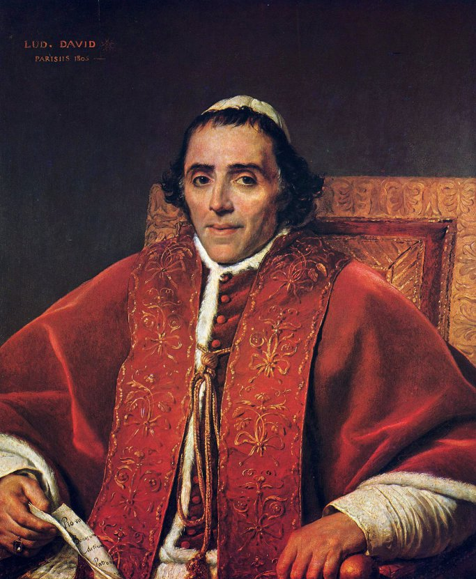
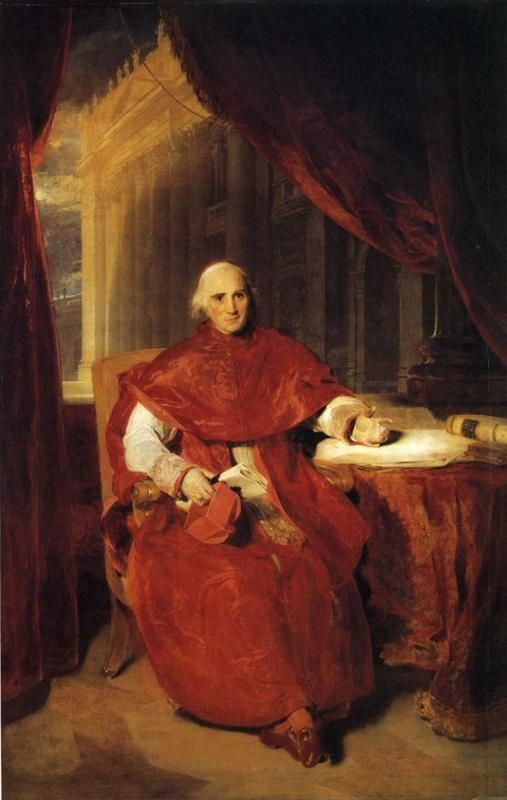
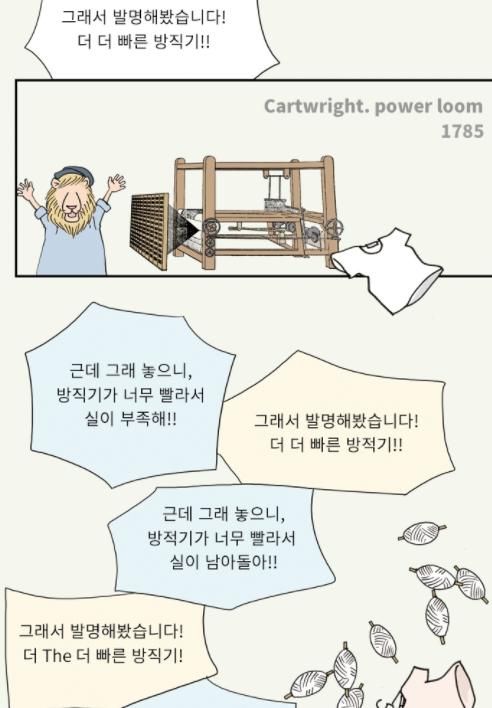

교황과 무역 - 포르투갈의 전운
게시: 2018-01-07T21:15:16+09:00
오스트리아 대사 슈바르첸베르크 대공이 아직 태어나지 않은 나폴레옹의 아들에게 바친 '로마 왕'(Roi de Rome)이라는 칭호는 단지 신성로마제국의 정통성을 나폴레옹에게 공치사로서만 넘긴 것은 아니었습니다. 실제로 이미 로마는 나폴레옹의 손아귀에 넘어온 상태였습니다.
로마 및 그 주변은 원래 세속 군주로서의 로마 교황이 가지는 교황국(the Papal States)에 속하는 영토였습니다. 그러나 유럽의 지배자 나폴레옹 눈 앞에는 고양이는 커녕 생쥐만도 못한 존재에 불과했습니다. 비오 7세(Pius VII)는 1804년 나폴레옹의 대관식에도 참석하는 등 나폴레옹에게 잘 보이기 위해 부단히 노력했으나, 다 소용없었습니다. 이미 1809년 5월 17일, 나폴레옹은 빈에서 칙령을 내려 로마 교황의 세속 군주로서의 자격을 박탈한다고 발표한 바 있었습니다. 당연히 비오 7세는 거부했지만, 뮈라가 파견한 프랑스군을 막을 힘이 그에게는 없었습니다. 그래도 교황에게는 영적인 지도자로서 휘두를 수 있는 매우 강력한 무기가 있었습니다. 파문이었지요.

(비오 7세입니다. 비오 7세의 전임자인 비오 6세가 나폴레옹에게 시달리다 죽을 정도였으니, 비오 7세는 일평생 나폴레옹에게 시달렸다고 할 수 있습니다. 그럼에도 불구하고 그는 나폴레옹을 언제나 '나의 아들'이라고 불렀습니다. '말을 안 듣는 아들이지만, 그래도 아들'이라고 했다는군요.)
프랑스 점령군이 로마를 점거하고 교황의 지배권을 몰수한다고 발표한 6월 10일 밤, 교황은 나폴레옹과 그 추종자들을 카톨릭 교회로부터 파문한다고 발표했습니다. 이건 과거 카노사의 굴욕을 이끌어낼 정도로 카톨릭 세계에서는 매우 무시무시한 처벌이었습니다. 그러나 때는 11세기가 아니라 19세기였습니다. 비오 7세는 '이 파문은 어디까지나 영적인 것이며 이 파문이 육신의 공격으로 이어져서는 안된다'라고 소심하게 덧붙였습니다. 사실 그럴 필요도 없었습니다. 교황이 누굴 파문하건말건 아무도 신경쓰지 않았으니까요. 이미 프랑스 내에서의 카톨릭 교회에 대한 인사권은 모두 나폴레옹에게 넘어간 뒤였거든요. 레미제라블 제1장을 보면, 장발장에게 은촛대를 선물한 미리엘 주교가 우연히 나폴레옹을 만나게 되고 그 짧은 만남에서 나폴레옹에게 좋은 인상을 주어 주교로 승진하는 장면이 나옵니다. 이미 정교협약(Concordat)에서 그렇게 협의가 되었기 떄문에 교황이 아니라 나폴레옹이 카톨릭 신부를 임명하고 해임했던 것이지요.
마리 루이즈와의 결혼, 좀 더 정확하게는 조세핀과의 이혼은 나폴레옹과 로마 사이에 더 심각한 갈등을 불러 일으켰습니다. 카톨릭에서 이혼은 심각한 일이었습니다. 모세도 허락했던 이혼을 예수님께서는 '시대가 바뀌었다'라시며 명시적으로 금지하셨으니까요. 이혼 문제 때문에 영국이 카톨릭에서 떨어져나와 영국 국교회를 따로 세울 정도였지요. 나폴레옹은 권력자답게 당당하게 이혼을 요구했는데, 이미 로마에서 체포되어 사보나(Savona) 등지를 전전하며 연금 상태에 놓여 있던 비오 7세는 단호하게 거부했습니다. 이로 인해 마리 루이즈와의 결혼식에는 무엄하게도 추기경들이 모두 불참하여 나폴레옹을 격분시키는 사태가 벌어졌습니다. 덕분에 비오 7세의 비서였던 콘살비(Consalvi) 추기경을 포함한 13명의 추기경들이 모두 파면되어 유럽 여기저기에서 빈곤 속의 유배 생활을 해야 했습니다.

(콘살비 추기경입니다. 나폴레옹이 그를 파리로 산 채로 잡아오게 한 뒤 직접 만난 자리에서 '연금 3만 프랑을 줄 테니 자신에게 협력하라'고 했으나 일언지하에 거절하고 랭스로 귀양을 갔다고 합니다. 그는 나폴레옹 폐위 때까지 빈곤 속에서 살아야 했습니다.)
일이 이렇게 된 김에, 나폴레옹은 한발 더 나아갔습니다. 원래 교황의 소유였던 로마와 그 주변 영토는 이미 나폴레옹이 왕으로 있는 이탈리아 왕국에 편입된 상태였습니다만, 1810년 2월에 아예 프랑스의 일부로 편입시켜 버린 것입니다. 새삼스럽게 그렇게 한 이유는 바로 나폴레옹의 미래의 황태자 때문이었습니다. 아들에게 로마 왕이라는 작위를 주려면 로마가 프랑스 영토인 것이 모양새가 좋았던 것입니다.
이렇게 나폴레옹의 제국은 날로 넓어지고 있었습니다만 여전히 나폴레옹에게는 골치거리가 남아 있었습니다. 바로 영국이었습니다. 트라팔가 해전 이후로 나폴레옹은 대륙봉쇄령(Blocus Continental)을 통한 영국 말려죽이기에 들어갔었지요. 그런데 이게 그렇게 잘 돌아가지 않고 있었습니다. 영국도 대륙과의 통상이 약 50% 정도 줄어 고통을 겪고는 있었습니다만, 영국은 대신 제해권을 바탕으로 미국과 남아메리카에 대한 통상을 증가시켜 버티고 있었습니다. 게다가 나폴레옹의 강력한 단속에도 불구하고 중립국 상선과 밀무역을 통해 대륙과 여전히 50%의 통상을 계속하고 있었습니다. 대륙봉쇄령 하에서도 영국의 연간 통상액은 무려 2천5백만 스털링 파운드(sterling pound)에 달했습니다. 현재 가치로 우리 돈 6조3천억이 넘는 어마어마한 금액이었습니다. 1809년 쇤브룬 조약에서 결정된 오스트리아의 전쟁 배상금이 8천5백만 굴덴, 현재 가치로 6300억원이었던 것과 비교할 때, 당시 영국이 얼마나 큰 경제력을 가지고 있었는지 짐작하실 수 있습니다.

(굽시니스트 굽본좌가 justoon.co.kr에서 수요일에 연재 중인 웹툰 '한중일 이웃나라 흥망사'에서 다룬 영국 산업혁명 과정입니다. 출처 http://www.justoon.co.kr/content/home/09qh02k1cc6e/viewer/09rf2ms1bbd7 )
하지만 1810년 당시 가장 많은 밀무역을 하던 곳은 네덜란드와 독일 북부 한자 동맹 도시들이었습니다. 과거부터 대서양을 통한 무역이 활발했던 그 도시들의 번영은 전적으로 해외 무역에 의존한 바가 컸습니다. 그런데 프랑스와 영국 간의 무역 전쟁으로 인해 영국과는 물론이고 아메리카 대륙과의 통상마저 어렵게 되자, 이 상인들의 도시는 도저히 견딜 수가 없었습니다. 사람은 결코 정부의 명령에 따라 순순히 시들어 죽지 않습니다. 어떻게든 살 길을 찾지요. 이 도시들은 그 살 길로 밀무역을 택했고, 도시의 번영과 무관할 수 없는 공무원들은 그런 밀무역을 애써 외면했습니다. 심지어 나폴레옹의 친동생이자 네덜란드 왕이었던 루이 보나파르트조차도 펄펄 뛰는 형의 성화에도 불구하고 국민의 번영을 위해 그런 밀무역을 어느 정도 용인할 정도였습니다. 이런 네덜란드와 독일 항구를 통해 들어온 영국 제품들은 유럽 전역에서 아주 잘 팔렸습니다. 워낙 값이 싸고 질이 좋았거든요. 심지어 프랑스군의 군복도 영국산 직물로 만들 정도였으니 말 다 했지요.
뿐만 아니었습니다. 마리 루이즈와의 결혼은 나폴레옹에게 유서 깊은 합스부르크라는 근사한 브랜드를 가져다 주었지만, 반대로 러시아의 분노도 갖다 주었습니다. 1810년부터 러시아는 대륙 봉쇄령에서 사실상 이탈하게 되었습니다. 영국과의 교역이 끊겨 경제가 어려워지자, 짜르 알렉산드르로서도 더 이상 국내의 불만을 무시하기가 어려웠던 상태였는데, 나폴레옹과 오스트리아가 혼인 관계를 맺자 더 이상 강력한 항구 단속이 어려웠던 것입니다. 얄미운 중립국, 특히 미국 국적의 상선들이 영국산 제품을 유럽으로 실어나르는 것도 얄미웠지만, 러시아의 항구로는 아예 영국 화물선들이 활발하게 화물을 실어날랐습니다.
이런 통상 전쟁에서 나폴레옹은 당장 뾰족한 방안을 내놓지 못했습니다. 프랑스의 산업 생산성은 산업혁명이 진행 중이던 영국의 공업력을 당해낼 수 없었으니까요. 그는 영국의 통상을 격멸하기 위해서, 당장 손에 닿는 영국부터 때려잡기로 합니다. 즉, 쥐노가 정복했다가 영국군이 탈환하여 주둔하고 있는 포르투갈을 재정복하기로 한 것입니다. 이를 위한 노력은 이미 1809년부터 시작되었습니다. 바그람 전투 준비에 한창이던 1809년 6월 중순, 나폴레옹은 술트와 네, 그리고 모르티에의 군단(corps)들을 하나로 합쳐 약 5~6만 병력의 하나의 군(armee)을 편성하도록 했습니다. 이 포르투갈 방면군의 목적은 단 하나, 영국군을 이베리아 반도에서 축출하는 것이었습니다. 나폴레옹은 이 대군의 지휘관으로 그 3명의 군단장 중 가장 선임자였던 술트를 지명하며, 절대 작은 그룹으로 나뉘어 움직이지 말고 반드시 한덩어리로 뭉쳐서 전진할 것을 지시했습니다. 내륙 교통망이 형편없었던 스페인-포르투갈 지형의 특성상 부대간의 통신을 유지할 방법은 그것 밖에 없다고 판단했던 것입니다.
그러나 이건 여러 모로 잘못된 판단이었습니다. 먼저, 현지 조달에 의존하는 프랑스군의 특성상, 그리고 척박한 포르투갈-스페인 특성상 그런 대군이 한 곳에 집결하여 한꺼번에 활동할 수가 없었습니다. 영국군은 그게 가능했는데, 그건 수천마리씩 동원 가능했던 막강한 노새 수송 부대 덕분이었습니다. 가난한 프랑스군은 그런 호사를 기대할 수 없었습니다. 또, 이베리아 반도는 영국산 제품이 쏟아져 들어오는 지역이 아니었습니다. 원래 가난하고 내륙 수송망이 한심한 수준이었던 이 지역은 전쟁 전에도 전쟁 중에도 영국산 제품을 대량으로 수입하기보다는, 오히려 와인이나 올리브유 정도를 수출하는 곳에 불과했습니다.
결정적으로, 나폴레옹의 명령은 완전히 잘못된 정보에 기초하고 있었습니다. 나폴레옹은 모르고 있었으나, 무어 경의 영국군을 축출하고 정비를 마친 술트 군단은 이미 포르투갈 북부의 주요 항구도시인 오포르토(Oporto)를 공격하여 함락시킨 뒤 잔혹한 약탈로 쑥대밭을 만든 뒤였습니다. 거기까지였다면 좋았겠으나, 이야기가 거기서 그치는 것이 아니었습니다. 2만의 영국군을 끌고 포르투갈로 돌아온 웰슬리(Arthur Wellesley) 장군이 방심하고 있던 오포르토의 술트를 기습, 프랑스군을 산산조각내버린 뒤였던 것입니다.
Source : The Reign of Napoleon Bonaparte by Robert Asprey
The Life of Napoleon Bonaparte by William Milligan Sloane
https://en.wikipedia.org/wiki/Pope_Pius_VII
https://en.wikipedia.org/wiki/Continental_System